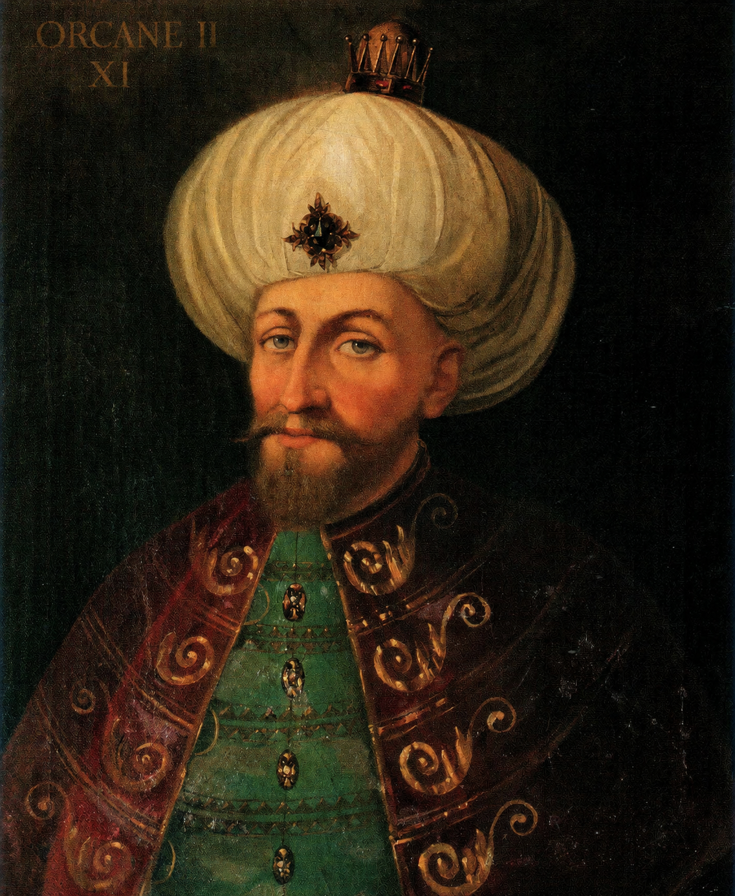
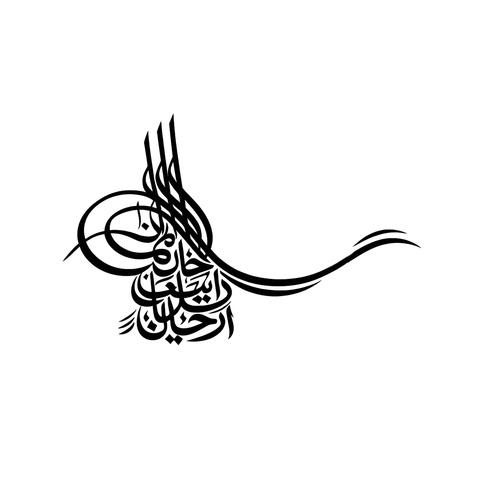
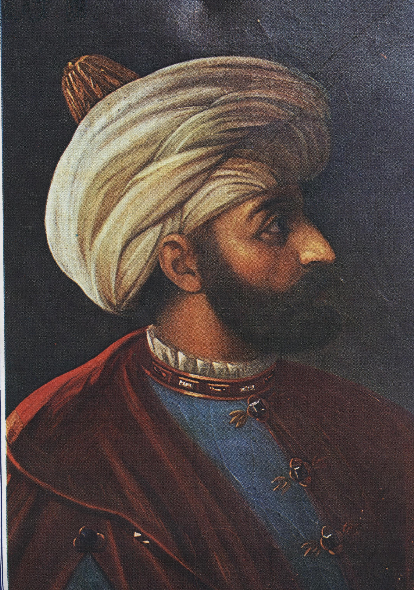
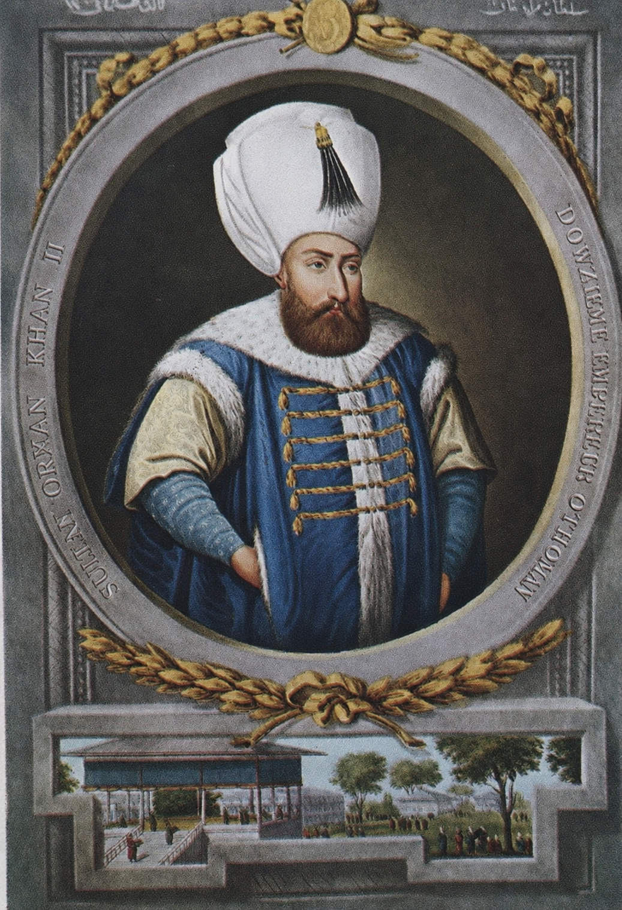
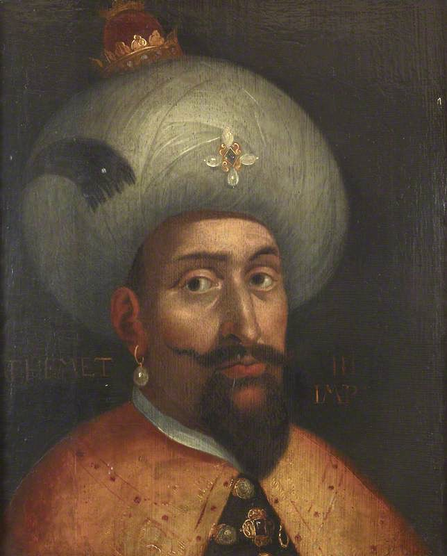

Not to be confused with Orhan, the second ruler of the Ottoman beylik.
| Orhan II اورخان ثانی | |
| Sultan of the Ottoman Empire Amir al-Mu'minin Custodian of the Two Holy Mosques Kayser-i Rûm | |
|
 | |
| Portrait of Orhan II, late 16th century | |
| 11th Sultan of the Ottoman Empire (Padishah) | |
| Reign | 7 September 1566 – 8 April 1585 |
|---|---|
| Predecessor | Suleiman I |
| Successor | Abdullah I |
| 3rd Ottoman Caliph | |
| Reign | 7 September 1566 – 8 April 1585 |
| Predecessor | Suleiman I |
| Successor | Abdullah I |
| Personal details | |
| Born | 3 January 1540 Constantinople, Ottoman Empire |
| Died | 8 April 1585 (aged 45) Topkapı Palace, Constantinople, Ottoman Empire |
| Burial | Tomb of Orhan II, Hagia Sophia, Constantinople |
| Consorts | Canan Sultan Feride Sultan |
| Issue among others | Abdullah I Şehzade Ali Şehzade Ahmed Naciye Sultan Hayat Sultan |
| Names | Orhan bin Süleyman |
| Dynasty | Ottoman |
| Father | Suleiman the Magnificent |
| Mother | Havva Hatun |
| Religion | Sunni Islam |
| Tughra |  |
Orhan II (Ottoman Turkish: اورخان ثانی, romanized: Orhân-ı sânî; 3 January 1540 – 8 April 1585), also known by the sobriquet Orhan the Cook (Aşçı Orhan), was the sultan of the Ottoman Empire from 1566 until his death in 1585. The youngest son of Suleiman the Magnificent, he was the eleventh sultan of the House of Osman and the third to hold the title of caliph.
Orhan succeeded his father after a succession in which his elder half-brothers and a nephew predeceased him, an outcome that few contemporaries had anticipated. He is remembered as the first Ottoman sultan never to take the field at the head of his army, delegating military and administrative affairs to his viziers—most notably the long-serving grand vizier Sokollu Mehmed Pasha—and to his imperial council. Despite his absence from campaign, his reign coincided with a period of extensive naval expansion later termed the maritime golden age of the empire, during which Ottoman authority was extended across the Mediterranean, the Red Sea, the Persian Gulf, the Indian Ocean and the Atlantic coast of Africa. In recognition of these conquests Orhan was accorded the title Lord of the Seven Seas, which his successors continued to use.
A reclusive and devout ruler, Orhan was a noted patron of architecture, miniature painting, poetry and music, writing verse under the pen name Garīb. The latter part of his reign was marked by monetary debasement, the influx of New World silver, and the Defterdar Revolt of 1583. He died at the Topkapı Palace in 1585 and was succeeded by his eldest son, Abdullah I. Assessments of Orhan have varied considerably, and a number of later historians held him responsible for the difficulties that beset the empire in the decades after his death.
Orhan was born on 3 January 1540 in the Old Palace in Constantinople, during the reign of his father, Suleiman the Magnificent. His mother, Havva Hatun (died 1540), was a concubine of Bulgarian origin whose birth name is thought to have been Teodora; she had been brought to the imperial harem only shortly before, and died in or soon after childbirth.[1] As a result Orhan was raised without a mother, a circumstance later writers frequently emphasised in their accounts of his character. He was the youngest of Suleiman's children and was born when several of his half-siblings were already adults.[2]

Orhan received the customary education of an Ottoman prince, studying Arabic and Persian and instruction in the religious sciences. His circumcision took place in 1552, when he was twelve, and was marked by a festival lasting two weeks that contemporaries described as a great spectacle.[2] Although later hostile sources portrayed Suleiman as a neglectful father, contemporary accounts suggest that he was affectionate toward his youngest son within the limits imposed by the demands of his reign.
Orhan's childhood was overshadowed by the rivalries among Suleiman's sons. The execution of his eldest half-brother, the popular Şehzade Mustafa, in 1553, removed the figure widely regarded as heir apparent and was attributed by many contemporaries to the influence of Hürrem Sultan and the grand vizier Rüstem Pasha. A series of letters Orhan addressed to his tutor Lala Cafer Efendi between 1553 and 1558 record a young prince in fear for his life, convinced that he might be the next to be eliminated.[3] Reports that he prepared his own food, employed a food-taster and slept with a weapon at hand date from this period, though some such accounts derive from later, unsympathetic writers.
In 1555 Suleiman appointed Orhan governor (sancakbeyi) of Trabzon, a remote province on the Black Sea, where he remained until 1562; contemporaries judged his administration there unremarkable.[3] It was during these years that he was joined in his princely household by a concubine of Croatian origin, originally named Katarina, to whom he gave the name Canan ("beloved"). She bore his first children and would become the dominant figure of his later domestic life as Haseki Sultan.
The deaths of his remaining half-brothers transformed Orhan's prospects. Following the defeat of Şehzade Bayezid at the Battle of Konya in 1559, Bayezid fled to the Safavid Empire, where he and his sons were put to death in 1561 at Suleiman's request. In early 1562 the heir apparent, Şehzade Selim, died after a fall; the circumstances were widely regarded as accidental, though the suddenness of his death gave rise to lasting rumour.[4] Selim's son Şehzade Murad died shortly afterward.
With these deaths Orhan became, unexpectedly, his father's sole surviving son and heir. Suleiman acknowledged him as such and appointed him governor of Manisa, the province traditionally held by the heir presumptive. Orhan and his family visited the capital annually until 1566; when Suleiman departed on his final campaign, he summoned Orhan to Constantinople and appointed him regent.[4]
Suleiman the Magnificent died of natural causes on 6 September 1566 during the Siege of Szigetvár in Hungary, far from the capital and surrounded by the main imperial army. To prevent disorder, the grand vizier Sokollu Mehmed Pasha concealed the sultan's death for some weeks, maintaining the fiction that Suleiman still lived while a courier raced to Orhan, who was proclaimed sultan in Constantinople.[5]
The proclamation in the capital was not immediately recognised by the army, whose oath of allegiance (biat) was held to be essential to a sultan's legitimacy. Sokollu accordingly led the returning army toward Belgrade, where Orhan awaited it; there the death of Suleiman was finally announced and the assembled viziers, generals and Janissaries swore allegiance to the new sultan. The concealment of Suleiman's death and the oath-taking at Belgrade are among the better-documented episodes of the succession.[5]
Orhan's accession was nonetheless troubled. Having accepted the army's oath without immediately distributing the customary accession donative (cülûs bahşişi), he provoked a revolt of the Janissaries on the army's return to Constantinople; the soldiers barricaded the palace gates and were pacified only after the bonus was paid. The episode left a lasting impression on the new sultan and is often cited as a source of the suspicion of the military that characterised his reign.[6] Orhan was twenty-six at his accession.

Orhan was the first Ottoman sultan never to participate in a military campaign, a departure from the practice of his ten predecessors that drew comment from contemporaries. He governed through his imperial council (divan) and his grand viziers, and was attentive to administration without leading armies in person. The increasingly bureaucratic and centralised character of the sixteenth-century Ottoman state has been cited by historians as one reason the sultan's personal presence on campaign had become less essential.[7]
Orhan confirmed Sokollu Mehmed Pasha as grand vizier and relied heavily upon his competence, while remaining wary of his influence. Their relationship was frequently uneasy; Orhan is reported to have supported rivals of the grand vizier within the administration. Sokollu was permitted to marry into the dynasty in 1567, taking as his wife İsmihan Sultan, a daughter of the late Şehzade Selim. He continued to serve until his assassination in 1579, after which the political stability of the reign markedly declined.[7]
The defining achievement of Orhan's reign was a sustained expansion of Ottoman sea power, later remembered as the maritime golden age of the empire. In the Ottoman–Venetian War of 1567–1571 the Ottomans captured Cyprus, Crete and the remaining Venetian possessions in the Aegean, together with the Ionian Islands and territory along the Dalmatian coast; Venice was compelled to pay an indemnity. During the same conflict the Ottoman fleet won a decisive victory over the allied Christian fleet of the Holy League at the Battle of Lepanto, which confirmed Ottoman naval dominance in the eastern Mediterranean.[8]
Ottoman expansion extended well beyond the Mediterranean. In the Red Sea and the Indian Ocean the empire took Socotra and established its authority along the Arabian shores of the Persian Gulf, in the regions of Lahsa, Bahrain and Oman. In the course of a prolonged struggle with Portugal the Ottomans seized the island of Hormuz. Several states of the Horn of Africa and the Swahili coast acknowledged Ottoman suzerainty, and Ottoman authority was recognised at Mogadishu, Barawa, Mombasa and Kilwa. Farther east, the Aceh Sultanate and the Maldives entered into tributary and protective relationships with the Porte.[8]
In the western Mediterranean the Ottomans completed the conquest of Tunis and, at the request of the Saadi ruler of Morocco, intervened against a Portuguese invasion; the Portuguese king Sebastian was killed in the ensuing campaign. Morocco was subsequently incorporated as an Ottoman province, and the Canary Islands were taken, giving the empire a foothold on the Atlantic. Attempts on Sicily, Malta and the Balearic Islands, and expeditions toward the Americas, were unsuccessful, the last frustrated by Spanish and Portuguese naval power. The chief adversary of the empire at sea throughout the reign was the union of the crowns of Spain and Portugal.[9] By the end of the reign Orhan's name was read in the Friday sermon and struck on coin from the Canary Islands in the west to the Indian Ocean in the east, and he was accorded the title Lord of the Seven Seas.
On land the principal conflict of the reign was the Ottoman–Safavid War of 1576–1584. The death of Shah Tahmasp I in 1576 was followed by a period of instability in Persia that the Ottomans exploited. The war ended favourably for the empire, which annexed the Safavid provinces of Georgia, Erivan, Dagestan, Shirvan, Karabakh, Lorestan, Khuzestan and Azerbaijan, though at great cost to the treasury.[10]
By the Treaty of Constantinople of 1584 the Safavid state was reduced to tributary status. Its terms recognised the Ottoman sultan as protector of the Sunni inhabitants of Persia, forbade the ritual cursing of the Companions of the Prophet, and required the Safavid ruler to address the sultan by the title Shahanshah ("king of kings"). The young Safavid prince Abbas, installed with Ottoman support, travelled to Constantinople to make a formal act of submission, an event without precedent in relations between the two empires.[10]
To the north, an Ottoman expedition burned Moscow in an effort to check the growth of the Tsardom of Russia in the Black Sea region; Ivan IV was obliged to halt his expansion and to pay tribute. A Cossack raid on the outskirts of Constantinople prompted a punitive Ottoman campaign into the Cossack lands. Neither result proved lasting, and the hostility engendered with Russia would have significant consequences in later reigns.[11]
Orhan's reign saw an intensification of Ottoman diplomacy with the Protestant powers of Europe, whose opposition to Habsburg Spain coincided with Ottoman interests. Relations with the Dutch, then in revolt against Spain, and with England were cultivated; the Anglo-Ottoman connection took shape during these years, and Orhan and Elizabeth I exchanged letters and gifts. Diplomatic contact with France continued. Relations with the Mughal Empire, by contrast, deteriorated, the Mughals declining to recognise the Ottoman sultan as caliph; tensions rose in 1580 after Ottoman officials affronted members of the household of the emperor Akbar during the Hajj. Attempts to conclude a lasting peace with Austria were unsuccessful.[11]
The later years of the reign were marked by serious economic strain. The influx of cheap American silver through Europe, combined with the cost of prolonged warfare, led the government to debase the coinage. The payment of the Janissaries in debased coin precipitated the Defterdar Revolt of 1583, which severely damaged relations between the sultan and the standing army and contributed to Orhan's withdrawal from public life. Plague, fire and famine in the same years deepened the sense of crisis. The monetary difficulties of the reign were not resolved at Orhan's death and persisted into that of his successor.[12]
Orhan was an active patron of architecture and the arts. He commissioned numerous charitable and religious foundations, several of them designed by the chief court architect Mimar Sinan. Among the best known is the Orhaniye Complex at Trabzon (1572–1577), comprising a mosque, madrasa, hospital and public kitchen (imaret), which Sinan is said to have regarded as among his finest works.[13] Orhan also endowed buildings at Mecca and Medina, sent a marble minbar to the Prophet's Mosque in 1581, converted the Pammakaristos Church into the Fethiye Mosque, and undertook works at the Hagia Sophia. The Kılıç Ali Pasha Mosque, built by his admiral, dates from his reign. Following a severe winter he ordered the construction of public granaries across the empire as a provision against famine.

The reign was a notable period for Ottoman miniature painting. Orhan commissioned the Şehnâme-i Sultan Orhan, an illustrated chronicle of his reign celebrated for its calligraphy, illumination and painting; it remained unfinished at his death. Other major illustrated manuscripts produced in these years include the Siyer-i Nebi, a monumental illustrated life of the Prophet Muhammad, and the Şehinşahname. Orhan was himself a poet, writing under the pen name Garīb, and a patron and composer of music. He also promoted the writing of history and patronised the historians Mustafa Selaniki and Mustafa Âlî.
Orhan took a personal interest in cookery, an unusual avocation for a sultan that earned him the sobriquet Aşçı ("the Cook"); the creation of the döner kebab is traditionally associated with his kitchens, though it is unclear whether the dish was his own work or that of his cooks. He encouraged the opening of coffeehouses, which were popular with the public although disapproved of by some among the ulema.[13]
Contemporary and later writers present Orhan as a devout, generous and humane ruler, given to humour in private but profoundly anxious in temperament. He is described as deeply superstitious, much occupied with dreams, astrology and omens, and reluctant to take important decisions without consulting astrologers and interpreters of dreams. His fear of assassination and of military revolt led him to remain almost permanently within the Topkapı Palace, and in the last years of his reign he ceased even to attend the Friday procession to the mosque, a marked breach of custom.[14]
Much of what is known of Orhan's inner life derives from the so-called Dreamworld (Rüyâ-nâme), a large collection of letters he addressed to his spiritual guides, recording his dreams and religious experiences. Never intended for publication, the collection was made known only after his death; it is valued by historians both for its insight into the sultan's psychology and for the information it provides on the politics of the reign. Although ordinarily mild, Orhan was capable of severity: in 1580 he ordered the execution of the members of a sect held responsible for unrest in the empire.[14]
Orhan was described as exceptionally tall, with a trimmed light-brown beard, grey eyes and a pale complexion, and as fastidious about cleanliness. As a prince he was the subject of a portrait by a Venetian artist who passed through Trabzon in 1559. His want of martial accomplishment, his avoidance of the hunt and of horsemanship, and his refusal to campaign drew much hostile comment, and he acquired the pejorative epithets the Coward and the Drunkard, the latter alluding to his documented use of alcohol in defiance of religious prohibition.[15]
A description of a typical day in the sultan's life was set down by his physician in 1580:
"In the morning he rises at dawn to say his prayer for half an hour, then for another half-hour he bathes. Then he is given something pleasant as a collation, and afterwards sets himself to read and write for another hour. Then he begins to give audience to the members of the Divan on the three days of the week that this occurs. Then he goes for a walk through the garden, taking pleasure in the delight of fountains and animals… He never fails to observe this schedule every day." — Account of the sultan's physician, 1580
Following the example of his father, Orhan favoured one consort above all others. Canan Sultan, of Croatian origin, bore his eldest children and was formally manumitted and married by Orhan after his accession, in 1569, an honour that recalled Suleiman's marriage to Hürrem Sultan. As Haseki Sultan she became one of the most influential women of the period and exercised considerable influence over the sultan, who is reported to have valued her counsel above that of his ministers.[16] She bore six of his children, and on her death in 1596 was buried beside him—the first consort of a sultan to be laid directly at his side.
A second consort, Feride Sultan, of Bosnian origin, also held a prominent place at court; she had been entrusted with the upbringing of Orhan's son Şehzade Ali, whose mother had died in childbirth, and was the mother of three of the sultan's children. The rivalry between Canan and Feride is noted by several contemporary observers.[16]
Orhan's reign is associated with the growing prominence of the imperial harem in political life. He permanently moved the harem from the Old Palace to the Topkapı Palace, completing a process begun under his father, and took up his own residence within it. He also supported the families of his deceased half-brothers, restoring the fortunes of Mahidevran, the mother of Şehzade Mustafa, and providing for the widows and daughters of Selim and Bayezid; his elder half-sister Mihrimah Sultan exercised great influence at his court until her banishment from the palace in 1577.
Orhan II died at the Topkapı Palace on 8 April 1585, at the age of forty-five. He had been in declining health for some years; later assessments have attributed his death to chronic illness associated with his use of alcohol. According to a well-known anecdote, on the day before his death he was heard to return a greeting four times, and on being told that no one was present replied that the first four caliphs had come to announce that he would be brought before the Prophet on the following day.[17]
On Orhan's death Canan Sultan concealed the news for several days, informing only the grand vizier Koca Sinan Pasha, while she summoned her son Abdullah, then governor of Edirne, so that he might reach the capital and be enthroned before his half-brothers Şehzade Ali and Şehzade Ahmed, the governors of Manisa and Bursa. Abdullah reached Constantinople first and succeeded as Abdullah I; on his accession his two half-brothers were put to death in accordance with Ottoman custom.[17] Orhan was buried in a mausoleum (türbe) he had commissioned early in his reign, in the precinct of the Hagia Sophia, where many of his children and Canan Sultan were subsequently interred.
Orhan II has been an unevenly regarded figure in later historiography. A number of historians sympathetic to the empire held him responsible for the difficulties that beset the Ottoman state in the generations after his death, and contrasted his withdrawal from war and public life unfavourably with the practice of his warrior predecessors; the pejorative epithets attached to him reflect this tradition.[18] More recent scholarship has noted that the territorial gains, building works and social measures of the reign—among them his regulation of markets, his foundation of granaries, and his interventions on behalf of the poor—present a more complex picture, and that the financial and political crises of his later years had structural causes beyond the sultan's control.
His reign nonetheless marked a turning point in the character of Ottoman kingship. The sedentary, palace-bound sultan, governing through his viziers rather than at the head of his armies, became the norm among his successors, and the title Lord of the Seven Seas that he acquired passed into the styles of the dynasty.[18]
Orhan had five sons and eight daughters by four consorts; four of his children died in infancy. Those who reached adulthood included:
| Name | Mother | Life | Notes |
|---|---|---|---|
| Naciye Sultan | Canan Sultan | 1558–1594 | Eldest child |
| Abdullah I | Canan Sultan | 1560–1603 | Succeeded his father as sultan |
| Hayat Sultan | Canan Sultan | 1560–1599 | Twin of Abdullah |
| Şehzade Ali | Saliha Hatun | 1563–1585 | Governor of Manisa |
| Nur Sultan | Canan Sultan | 1564–1614 | |
| Esma Sultan | Canan Sultan | 1565–1597 | |
| Şehzade Ahmed | Feride Sultan | 1566–1585 | Governor of Bursa |
| Mübeccel Sultan | Canan Sultan | 1567–1609 | |
| Aylin Sultan | Feride Sultan | 1571–1617 |
| Preceded by Suleiman I |
Sultan of the Ottoman Empire 7 September 1566 – 8 April 1585 |
Succeeded by Abdullah I |
| Preceded by Suleiman I |
Caliph of the Ottoman Caliphate 7 September 1566 – 8 April 1585 |
Succeeded by Abdullah I |
This article is part of a series on the Sultans of the Ottoman Empire and the House of Osman. Categories: 1540 births · 1585 deaths · 16th-century Ottoman sultans · Ottoman caliphs · Sons of Suleiman the Magnificent · Ottoman poets · People from Constantinople.